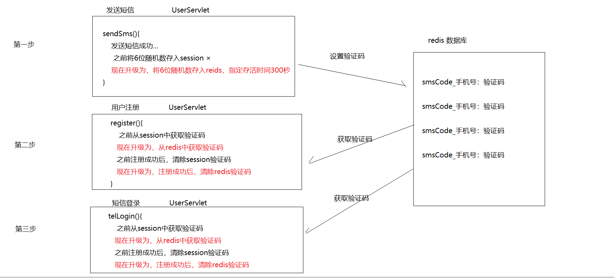

- NoSQL
- Redis入门
- 5种数据类型
- Jedis入门
- 优化黑马旅游网
一.NoSQL
1.1 NoSQL介绍
NoSQL(Not-Only SQL)，泛指非关系型的数据库，它可以作为关系型数据库的良好补充。
| 关系型数据库 | 非关系型数据库 | |
|---|---|---|
| 特点 | 数据直接存在关联关系 | 数据之间没有关联关系 |
| 所有数据都在磁盘中 | 所有数据都在内存中 | |
| 总结 | 存储复杂关系模型，硬盘io速度较慢 | 只能存储简单数据模型，内存io查询速度快 |
为什么学习NoSQL
高并发、高可用、高性能、海量数据
传统的关系型数据库出现了性能和扩展的瓶颈，所以非关系型数据库应时而生，解决了互联网产品的三 高和海量数据的问题
NoSQL和关系型的数据库是互补关系，在各自的应用场景中都有自己的特点，一般情况下我们使用关系 型数据库持久化数据(处理复杂的业务场景)，对一些热点数据通过NoSQL来作为缓存提高效率
使用后
- 先查找缓存
- 没有数据再查找数据库
1.2 NoSQL的主流产品
| 分类 | 特点 | 代表产品 |
|---|---|---|
| 键值存储 | 数据一般存在内存中，读写速度快(10w/s)，适合作为缓存服务 | redis |
| 文档型数据库 | 数据结构要求不严格，适合存储结构不确定或者价值较低的数据 | mongodb |
| 列存储数据库 | 查找速度快，更容易进行分布式扩展，适合作为文件存储服务 | Hbase |
| 图形数据库 | 使用“图结构”进行存储，适合做社交网络计算等等 | Neo4j |
二.Redis
2.1 Redis介绍
Redis(Remote Dictionary Server)是用C语言开发的一个开源的高性能键值对数据库。它的所有数据 都是保存在内存中的,这也就决定了其读写速度之快,是其它硬盘保存数据的系统所无法匹敌的。
官方曾经给出过一组测试数据，50个并发执行100000个请求: 读的速度是110000次/s,写的速度是 81000次/s
2.2 Redis安装和使用
下载
Reids官网地址:http://redis.io
中文网地址:https://www.redis.net.cn/
docker
docker pull redis
Linux
1
2
3
4
5
6
7
8
9
10
11
12$ wget http://download.redis.io/releases/redis-6.0.3.tar.gz
$ tar xzf redis-6.0.3.tar.gz
$ cd redis-6.0.3
$ make
$ src/redis-server
$ src/redis-cli
redis> set foo bar
OK
redis> get foo
"bar"
目录
redis.conf:配置文件
2.3 Redis客户端图形化工具
Redis Client 、Redis Desktop Manager 、Redis Studio.
2.4 Redis数据结构
Redis采用的键值对存储数据，键(key)的类型只能为字符串，值(value)支持五种数据类型:
| K-V类型 | key(字符串) | value(支持5种类型) |
|---|---|---|
| 字符串：String | mystr | stringcode |
| 哈希：HashMap | myhash | map集合(key:0),(value:100) |
| 双向链表：LinkedList | mylist | 左压栈—A-A–B–右压栈(有序且可重复) |
| 无序集合：HashSet | myset | A|C|B|E|D (无序但不可重复) |
| 有序集合：LinkedHashSet | myzset | A|B|C|D|E (有序但不可重复) |
2.5 Redis命令操作
Redis命令是用来操作Redis数据库的, 就相当于操作MySql数据库时的SQL语句。
Redis的命令根据要操作的值(value)的数据结构的不同而不同, 每种数据类型都有自己的操作命令
2.5.1 String字符串
字符串类型是Redis中最为基础的数据存储类型。
在Redis中字符串类型的Value最多可以容纳的数据长度是512MB。
| 用法 | |
|---|---|
| 新增 | set key value [EX seconds | PX milliseconds] [NX | XX] [KEEPTTL] |
| 查询 | get key |
| 删除 | del key [key …] |
| 新增并指定存活时间 | setex key seconds value |
| ttl key 查看存活时间 | |
| 主键自增器 | incr key (value默认加1) |
1 | 127.0.0.1:6379> set mystr stringcode |
2.5.2 Hash哈希
Hash类型极其类似于java中的Map,值里面可以存放一组组的键值对
该类型非常适合于存储java中对象的信息
| 用法 | |
|---|---|
| 新增 | hset key field value [field value …] |
| 查询 | hget key field |
| hgetall key | |
| 删除 | hdel key field [field …] |
| del key [key …] |
1 | 127.0.0.1:6379> hset user_1 name Jack |
2.5.3 List列表
List类型底层是一个双向字符串链表。里面的元素是有序的，可重复的
我们可以从链表的任何一端进行元素的增删
redis的list是一个双向列表 |
||
|---|---|---|
=========================== |
||
| b | a |
c |
=========================== |
| 用法 | ||
|---|---|---|
| 新增 | lpush key element [element …] | 将元素压入左侧顶端 |
| rpush key element [element …] | 将元素压入右侧顶端 | |
| 查询 | lrange key start stop | 从左向右查询 0 -1 查看所有 |
| 删除 | lpop key | 将左侧顶端元素弹出 |
| rpop key | 将右侧顶端元素弹出 |
1 | 127.0.0.1:6379> lpush mylist a |
2.5.4 Set集合（无序）
Set类型底层是一张hash表。里面的元素是无序的，不可重复的
| 用法 | ||
|---|---|---|
| 新增 | sadd key member [member …] | 新增指定key元素 |
| 查询 | smembers key | 查询指定key元素 |
| 删除 | srem key member [member …] | 删除指定元素 |
| del key [key …] | 删除整个set集合 |
1 | 127.0.0.1:6379> sadd myset a |
2.5.5 ZSet集合（有序）
Zset,也称sortedSet, 在Set的基础上，加入了有序功能，在添加元素的时候，允许指定一个分数，它会 按照这个分数排序
| 用法 | ||
|---|---|---|
| 新增 | zadd key [NX | XX] [CH] [INCR] score member [score member …] | 新增指定key元素 |
| 查询 | zrange key start stop [WITHSCORES] | 升序 |
| zrevrange key start stop [WITHSCORES] | 降序 | |
| 删除 | zrem key member [member …] | 删除指定元素 |
| del key [key …] | 删除整个zset集合 |
1 | 127.0.0.1:6379> zadd myzset 10 aaaaa |
2.5.6 通用命令
| 命令 | |
|---|---|
| 模糊查询键 | keys * |
| 删除多个键 | del key [key …] |
| 根据键判断记录是否存在 | exists key[key …] |
| 根据键判断值类型 | type key |
| 选择数据库 | select index (0~15) |
| 清空当前数据库 | flushdb [ASYNC] |
| 清空所有数据库 | flushall [ASYNC] |
2.6 Redis持久化
Redis的数据都是存在在内存之中的，那么这样一旦出现宕机，势必会导致数据的丢失，这就需要持久化操作，也就是要将redis在内存中的数据写到硬盘上保存。
注意，redis虽然有持久化操作，但是其全部数据依旧都在内存中存在,也就是说硬盘上的只是为了安全和备份。
Redis提供了两种数据持久化的方式，分别是 RDB 和 AOF
RDB:默认开启
在redis运行期间，根据指定时间节点对内存的数据进行快照拍摄，持久化到磁盘文件(dump.rdb文件) 指定时间规则拍摄快照
1
2
3
4
5
6
7
8
9
10
11
12
13
14
15
16
17
18
19
20
21
22
23
24
25
26
27
28
29
30cat redis.conf | tail -n +265 | head -n 25
################################ SNAPSHOTTING ################################
#
# Save the DB on disk:
#
# save <seconds> <changes>
#
# Will save the DB if both the given number of seconds and the given
# number of write operations against the DB occurred.
#
# In the example below the behaviour will be to save:
# after 900 sec (15 min) if at least 1 key changed
# after 300 sec (5 min) if at least 10 keys changed
# after 60 sec if at least 10000 keys changed
#
# Note: you can disable saving completely by commenting out all "save" lines.
#
# It is also possible to remove all the previously configured save
# points by adding a save directive with a single empty string argument
# like in the following example:
#
# save ""
#1个key修改，15min后拍摄一次快照
save 900 1
#10个key修改，5min后拍摄一次快照
save 300 10
#10000个key修改，1min后拍摄一次快照
save 60 10000AOF:默认关闭，需要手动开启
在redis运行期间，以日志记录的方式监听set操作，持久化到磁盘文件(appendonly.aof)
开启AOF:修改 redis.conf配置
1
2
3
4
5
6
7
8
9
10
11
12
13
14
15
16
17
18
19
20
21
22
23
24
25
26
27
28
29
30
31
32cat redis.conf | tail -n +1018 | head -n 53
############################## APPEND ONLY MODE ###############################
......
# Please check http://redis.io/topics/persistence for more information.
#若开启设置为yes
appendonly no
# The name of the append only file (default: "appendonly.aof")
appendfilename "appendonly.aof"
# The fsync() call tells the Operating System to actually write data on disk
# instead of waiting for more data in the output buffer. Some OS will really flush
# data on disk, some other OS will just try to do it ASAP.
#
......
#日志持久化机制
#每次执行set操作时都会持久化一次
# appendfsync always
#每秒持久化一次
appendfsync everysec
#根据服务器，cpu处于idle情况，持久化一次
# appendfsync no
2.6.1 知识小结
这二种持久化机制可以共存
| RDB:把redis作为缓存来用 | AOF:把redis作为独立数据库 | |
|---|---|---|
| 优点 | 性能高 | 几乎不会丢失数据 |
| 缺点 | 可能会丢失部分数据 | 性能较差 |
2.7 应用场景
2.7.1 缓存
将一些经常访问但又不会经常修改的数据，进行缓存，提高查询效率
2.7.2 秒杀
| 浏览器 | ➡秒杀 | redis服务器 | ➡同步 | MySQL |
|---|---|---|---|---|
| 商品 | 扣库存 | 同步数据 | ||
| 生成订单 | ||||
| 支付发货 |
2.7.3 微博热搜
| 微博app | ➡ | redis |
|---|---|---|
| 微博热搜 | ZSet评分有序集合 |
2.7.4 分布式session
| User | ➡ | Tomcat服务器 | ➡ | redis |
|---|---|---|---|---|
| 第一次访问 | Server_1 | 设置 | ||
| User | User | |||
| 第二次访问 | Server_2 | 查询 |
2.7.5 验证码存储
| 网站 | ➡ | redis |
|---|---|---|
| 发送短信 | 手机号:6位随机验证码 | |
| 精准控制session只有5min |
三.Jedis
3.1 Jedis使用
Redis作为一款优秀的缓存服务器存在，大多数语言都提供了连接Redis的驱动包，在java中，比较出名
的是Jedis和Redisson，我们今天以Jedis为例学习，看看如何是用程序操作redis。
常用API
方法 解释 new Jedis(host, port) 创建jedis对象，参数host是redis服务器地址，参数port是redis服务端口 set(key,value) 设置字符串类型的数据 get(key) 获得字符串类型的数据 hset(key,field,value) 设置哈希类型的数据 hget(key,field) 获得哈希类型的数据 lpush(key,values) 设置列表类型的数据 lpop(key) 列表左面弹栈 rpop(key) 列表右面弹栈 del(key) 删除指定的key
快速入门
导入相关坐标
1
2
3
4
5
6<!--jedis-->
<dependency>
<groupId>redis.clients</groupId>
<artifactId>jedis</artifactId>
<version>2.9.0</version>
</dependency>
编写代码
1
2
3
4
5
6
7
8
9
10
11
12
13
14
15
16
17
18
19
20
21
22
23
24
25
26public class JedisTest {
// 快速入门之，向redis设置string类型的数据
public void testSet() throws Exception{
// 1.创建连接对象
// 默认连接 127.0.0.1 主机 和 6379 端口
Jedis jedis = new Jedis();
// 2.调用set方法设置数据
jedis.set("Java", "Hello,World");
// 3.释放资源
jedis.close();
}
// 快速入门之，查询string类型数据
public void testQuery() throws Exception{
// 1.创建连接对象
Jedis jedis = new Jedis();
// 2.调用get方法获取
String java = jedis.get("Java");
System.out.println(java);
// 3.释放资源
jedis.close();
}
}
3.2 Jedis连接池
jedis连接资源的创建与销毁是非常消耗性能的，所以我们不希望频繁的创建和销毁它.基于这样的需求,就有了JedisPool技术。
快速入门
1
2
3
4
5
6
7
8
9
10
11
12
13
14
15
16
17
18
19
20
21
22
23
24
25
26
27
28public class JedisPoolTest {
// 测试jedis内置的连接池
public void testJedisPool() throws Exception {
// 0.连接池配置对象
JedisPoolConfig jedisPoolConfig = new JedisPoolConfig();
// 最大连接数
jedisPoolConfig.setMaxTotal(100);
// 最大等待时间，单位是毫秒
jedisPoolConfig.setMaxWaitMillis(3000);
// 最大空闲连接数
jedisPoolConfig.setMaxIdle(10);
// 1.创建连接池对象
JedisPool jedisPool = new JedisPool();
// 2.从池中获取连接
Jedis jedis = jedisPool.getResource();
// 3.操作api
jedis.hset("myhash", "id", "1");
// 4.归还到连接池
jedis.close();
}
}抽取为连接池工具类
1
2
3
4=localhost
=6379
=20
=10
1 | public class JedisUtils { |
四.黑马旅游网
4.1 缓存：导航条分类
4.1.1 需求分析
| 前端页面 | ➡ | JavaServer | ➡ | SQL |
|---|---|---|---|---|
| 首页 门票 周边游 | CategroyService | ➡ | NoSQL | |
| 先查询缓存(redis)，有就直接返回 | redis | |||
| 没有，再查MySQL，先同步到redis再返回 | ➡ | MySQL | ||
| List<Categroy> list; 将list转为json数组字符串返回 |
4.1.2 代码实现
1 | public class CategoryServiceImpl implements CategoryService { |
4.2 短信验证码存活时间5分钟
4.2.1 需求分析

4.2.2 代码实现
1 | protected void sendSms(HttpServletRequest req, HttpServletResponse resp) throws IOException, ServletException { |
1 | protected void register(HttpServletRequest req, HttpServletResponse resp) throws ServletException, IOException { |
1 | protected void telLogin(HttpServletRequest req, HttpServletResponse resp) throws ServletException, IOException { |
总结
## 一 NoSQL
### 非关系型数据库，not only sql，弥补关系型数据库一些不足
### 特点：
- 关系性
- 1）数据之间存在关联关系
- 2）数据存储在硬盘
- 非关系型
- 1）数据之间不存在关联关系
- 2）数据存储在内存
### 解决：互联和行业特点
- 高并发
- 高性能
- 高可用
- 海量数据
### nosql分类
- 键值对
- redis
- 文档类型（json）
- mongoDB
- 列存储
- hbase
- 图形（关系结构）
## 二 Redis
### 介绍
- C语言编写高性能键值对数据库
### 数据类型
- string
- hash
- linkedList
- hashset
- linkedHashSet
### 命令
- 字符串
- set key value
- get key
- del key
- setex key 存活时间 value
- incr key
- value+1
- 哈希
- hset key hkey hvalue
- hget key hkey
- hgetall key
- hrem key hkey
- del key
- 列表
- lpush key value
- rpush key value
- lrange key 0 -1
- lpop key
- rpop key
- del key
- 集合
- sadd key value
- smembers key
- srem key value
- 有序集合
- zadd key score value
- zrange key 0 -1 withscores
- zrevrange key 0 -1 withscores
- zrem key value
- 通用命令
- keys *
- del key1 key2 key3
- exists key
- type key
- select 0~15
- flushdb
- flushal
### 持久化
- RDB
- 默认开启，在指定间隔时间将内存的数据拍摄快照，持久化到磁盘
- 1）优点：性能高
- 2）缺点：丢失数据
- AOF
- 手动开启，根据日志记录方式监听redis的写（set）操作，持久化到磁盘
- 1）优点：保证数据的安全
- 2）缺点：性能稍差
### 应用场景
- 1）缓存
- 2）秒杀
- 3）微博热搜
- 4）验证码存储
- 5）分布式session
## 三 Jedis
### 通过java语言操作redis，api与redis命令相似
### 快速入门
- 1）导入jar坐标
- 2）编写代码
- //1.创建连接对象
- //2.操作api
- //3.关闭连接
### Jedis连接池
## 四 优化：黑马旅游网
### 4.1 缓存：导航条分类
### 4.2 短信验证码存活时间5分钟